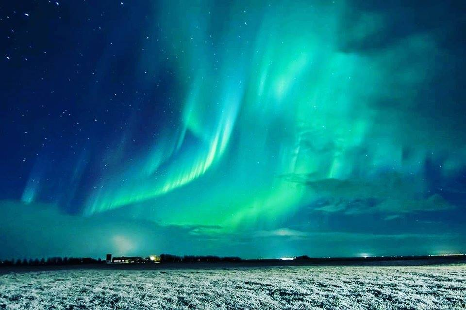
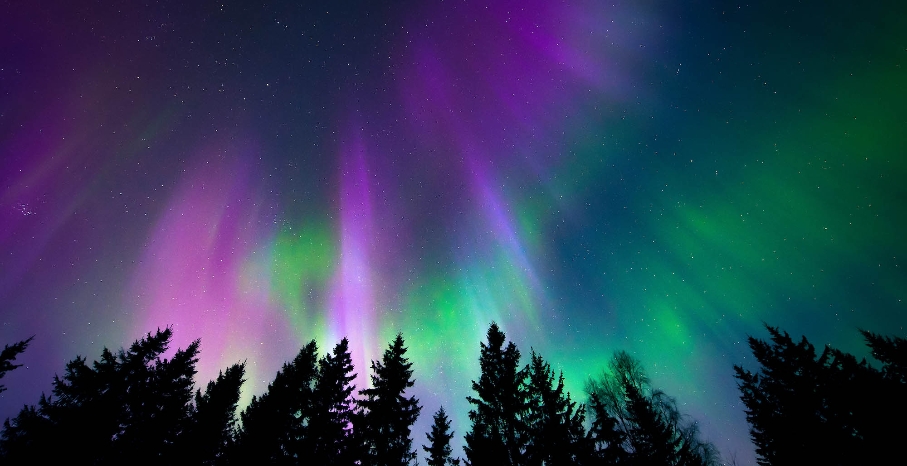

Northern Alaska is where many Americans head for the chance to see the aurora borealis. It may be cold in winter (temperatures can drop to -30°F), but the inland Alaskan Arctic — where skies tend to be clearer — is one of the best places in the world to see this famous light show.
 